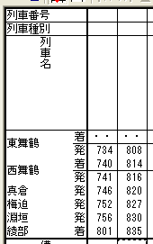
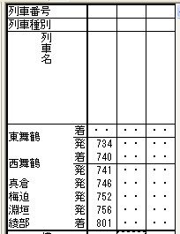
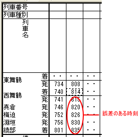
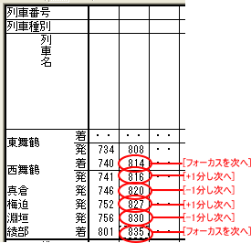

メニューコマンドの代わりに、以下のショートカットキーを押しても同じ効果があります。
時刻表ビューの駅時刻を1分単位で素早く修正する機能です。
この機能は、１分の＋−が散在している列車時刻を修正する場合を想定して用意したものです。
たとえば、同じ運転区間に同じ停車駅・ほぼ同じ所要時間の２本以上の列車を入力する場合、
１． １本目は全駅の時刻を手作業で入力する（連続入力モードなどで）
２． ２本目以降は１本目をコピー・ペーストしたうえで、始発駅の時刻を繰下げる
という手順で入力したくなります。
ところが、実際に上記のように２本目を配置してみると、いくつかの駅に１分の誤差が生じている場合があります。
このような列車に対しては、この機能を使うと、散在する１分の誤差を素早く修正することができます。
『列車の駅時刻の連続1分修正』機能は、以下のメニューコマンドにより構成されます。
時刻表ビューの駅時刻にフォーカスがある状態で、メニューコマンド [駅時刻]−[連続1分修正]-[-1分し次へ] を選択すると、OuDia はフォーカスのある駅時刻と、それ以後の駅時刻を１分繰上げて、フォーカスを次の位置へ移動させます。
同様に、 [駅時刻]−[連続1分修正]-[+1分し次へ] を選択すると、フォーカス位置以後の駅時刻を１分繰下げて、フォーカスを次の位置に移動します。
また、[駅時刻]−[連続1分修正]-[フォーカスを次へ] を選択すると、単にフォーカスを次の位置に移動します。
いずれの場合も、フォーカスの移動方向は、『フォーカス移動モード』に従います。
 この機能は事実上、ショートカットキーを使うことを前提としています。
この機能は事実上、ショートカットキーを使うことを前提としています。
メニューコマンドの代わりに、以下のショートカットキーを押しても同じ効果があります。
| [駅時刻]−[連続1分修正]-[-1分し次へ] | [Ctrl]＋[J] |
| [駅時刻]−[連続1分修正]-[-1分] | [Ctrl]＋[Shift]+[J] |
| [駅時刻]−[連続1分修正]-[フォーカスを次へ] | [Ctrl]＋[K] |
| [駅時刻]−[連続1分修正]-[フォーカスを前へ] | [Ctrl]＋[Shift]+[K] |
| [駅時刻]−[連続1分修正]-[+1分し次へ] | [Ctrl]＋[L] |
| [駅時刻]−[連続1分修正]-[-1分] | [Ctrl]＋[Shift]+[L] |
ここでは、以下の２本の列車を入力する場合を例に、連続１分修正の使い方を説明します。

（１） 『フォーカス移動モード』は、『フォーカス下移動モード』に設定しておきます。
（２） １本目の列車を入力します。

（３） １本目の列車をコピー・ペーストし、２本目の列車の始発駅の時刻を修正します。
※ この段階では、２本目の列車の実際のダイヤとコピー・ペーストした結果との間には、いくつかの駅において１分の誤差が生じています。

（４） コピー・ペーストした列車の始発駅の次の駅にフォーカスを合わせてから、各駅の１分の誤差を、 [-1分し次へ] ・[フォーカスを次へ] ・[+1分し次へ] の３つのコマンドを使って順に修正します。
※ このとき、 [Ctrl]＋[J]・[Ctrl]＋[K]・[Ctrl]＋[L] キーを使うと、素早く修正できます。

(5) 2分以上の誤差を修正する場合は、[駅時刻]-[-1分]・[駅時刻]-[+1分]を併用することにより、誤差を素早く修正できます。例えば、駅時刻を2分繰下げる場合は、[駅時刻]-[+1分]・[駅時刻]-[+1分して次へ]の順に操作することにより、最も早く修正を行うことができます。
また、[駅時刻]-[フォーカスを前へ]を利用すると、前の駅の修正を訂正することができます。